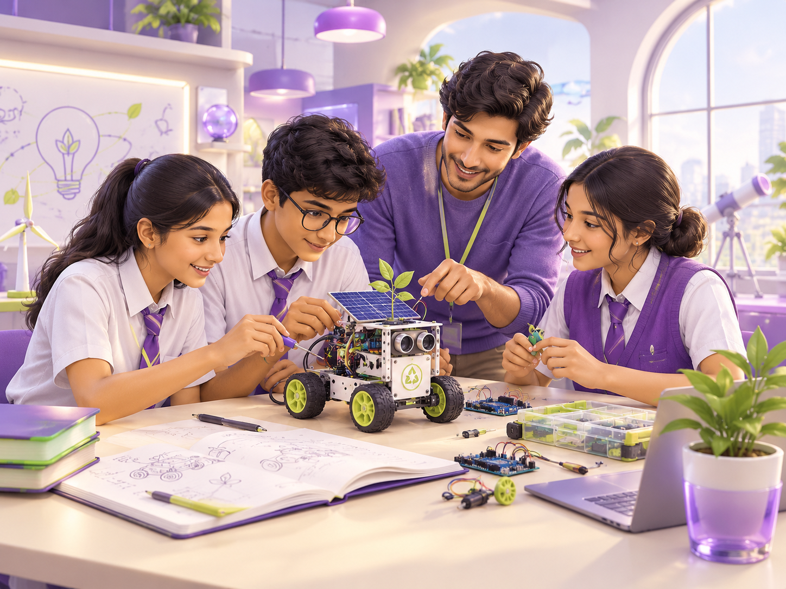

MIIC × CODEVIDHYA PRESENTS 2026 EDITION
Little ideas.
Big possibilities.
For the daydreamers. The “what if?” thinkers.
The students ready to build what comes next.
For the daydreamers. The “what if?” thinkers.
The students ready to build what comes next.
That problem you keep noticing on the way to class? It could be the beginning of something brilliant. The Ideathon helps you turn curiosity into a solution worth sharing.
Work with your team on a common real-world challenge. Explore the problem, build a startup concept and pitch it to people who can help it grow.
MNIT student Innovation Mentors work with your team on coding, AI, electronics, design, research and prototyping.
A curious crew, a real problem, a fresh perspective and a story worth sharing. That’s all you need to begin.
Gather your team of 2–5. Bring your curiosity. Your next chapter starts with one little idea.
Every breakthrough starts with a question.
Pick a spark. See where your imagination goes.
What if learning could adapt to every learner?
Think about a moment when a classmate needed a different way to understand something.Think a little differently. Shape your solution.
Then take the stage.
A proposed three-month journey, with support along the way.
An aptitude round built around logic, creativity and problem-solving. Bring your thinking cap.
Refine your solution with an MNIT Innovation Mentor. Share your idea report and online pitch.
Up to 10 finalist teams. A live pitch at MNIT, followed by judges’ questions. Make your idea count.
✳ A launchpad, not a finish line. The winning team receives a structured mentorship and incubation track.
Programme schedule is proposed. Exact dates and final rules will be announced by the organizers.

You don’t need to have it all figured out. Innovation is a team sport—and your team goes beyond your classroom.
MNIT student Innovation Mentors help with coding, AI, electronics, design, research and prototyping.
Promising solutions get guidance on refinement, project development and pathways into the innovation ecosystem.
School teams bring the curiosity. You help them turn it into something real.
Takes under a minute. We’ll get in touch with next steps before Round 2.
We’ll reach out on WhatsApp or email with next steps before Round 2.
Preview mode: this registration was not stored yet.
Fresh eyes see new possibilities. Start with a problem around you and ask: could we make this better?
Find your starting point ↗A curious crewBring together different strengths—thinkers, makers and storytellers.
A real problemStart with people. What frustrates them? What could be simpler?
A fresh perspectiveExplore what makes your solution useful, practical and different.
A story worth sharingShow the problem, solution, user, value and your plan to build it.
Everything you need to go from “I’m interested” to “we’re in.”
Your step-by-step video guide will be right here.
Find your peopleForm a team of 2–5 students.
Connect with your schoolSpeak to your teacher or coordinator.
Watch this spaceRegistration details are on their way.
The programme is for school students in classes 6–12, with teams of 2–5 students. The proposed categories are Junior (classes 6–8) and Senior (classes 9–12). Schools nominate or register participating teams.
No coding requirement is specified in the proposal. A team needs curiosity, problem-solving and different strengths. MNIT Innovation Mentors can support technical exploration, design and prototyping.
The aptitude test and idea pitch rounds take place online. Shortlisted finalists present live on the MNIT campus in Jaipur. Exact dates and venue details will be announced.
The draft format is a 7-minute team pitch followed by 3 minutes of questions. Prepare a 16:9 PPT and PDF backup covering the problem, solution, users, value and execution. Final deck specifications will be shared by the organizers.
The winning team receives a structured mentorship and incubation track. Codevidhya supports promising ideas with refinement, project development and connections to relevant startup ecosystems.
Teams can register on the registration page; it takes about 5 minutes. Exact dates, any fees and the final challenge theme will be announced by the organisers. Contact headoffice@codevidhya.com for updates.
Gather your team. Bring your curiosity. Your next chapter starts with one little idea.
Count us in ↗Takes about 5 minutes · teams of 2–5